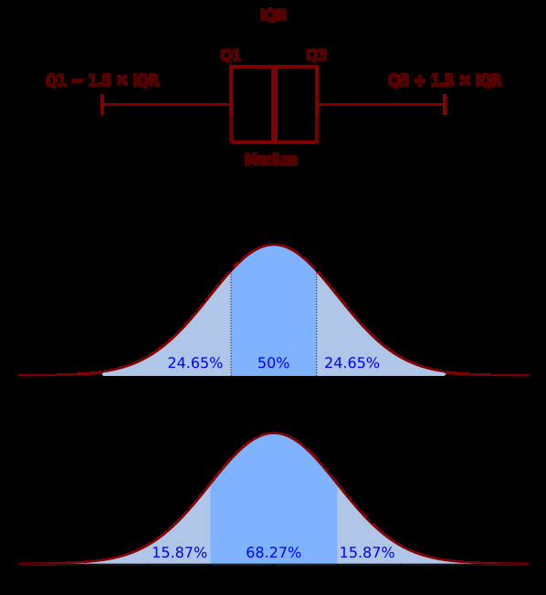
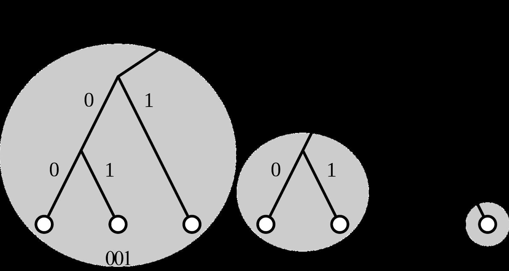
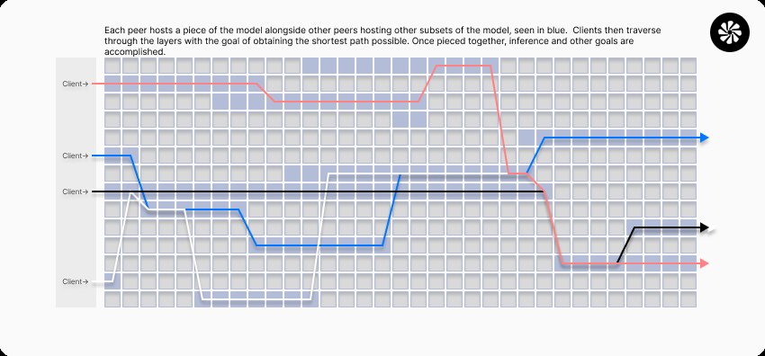

Hypertensor: A Decentralized, Incentivized, and Democratized Layer 1 Artificial
Intelligence Economy
Testnet v1.0
hypertensor.org
The initial pioneers of blockchain, Satoshi Nakamoto and Vitalik Buterin building Bitcoin and
Ethereum respectively, set out to create a purely peer-to-peer version of electronic cash that
would allow online payments to be sent directly from one party to another without going through
a financial institution, and to form a decentralized computing network that uses blockchain
technology and that is more than just a store of value or medium of exchange. These concepts
require multiple servers to run the same software and validate the network's data, resulting in a
decentralized network that scales decentralization as the number of nodes grows. Additionally,
these concepts feature no centralized issuer or controller. What Hypertensor intends to provide
is similar to the former, but for the AI (Artificial Intelligence) industry, a decentralized Artificial
Intelligence economy.
Abstract
A decentralized, incentivized, and democratized layer 1 artificial
intelligence protocol using blockchain technology to interface with
peer-to-peer decentralized deep learning applications. The
blockchain forms consensus amongst peers hosting subsets of
machine-learning models, validating and vetting machine-learning
models, and acts as a payments and transactions infrastructure.
The peer-to-peer machine learning application of the protocol is a
network of servers each hosting a piece of a model alongside
other peers hosting various subsets of the model. Together, these
participants host an entire model clients can perform tasks on,
such as fine-tuning and inference.
1. Introduction
AI (Artificial Intelligence) on the internet has come to rely almost exclusively on centralized data
centers that inherently control these machine-learning models in various forms. While the
system works well enough, the same issues that have risen in the financial industries, such as a
single point of failure, custodial risks, lack of transparency, regulatory uncertainty and corruption,
manipulation, exclusion, dependency, and widespread corruption, are likely to happen within the
economy of AI. Where Bitcoin, Ethereum, and similar technologies can resolve these issues,
Hypertensor sets out to solve these same issues within AI by building a decentralized AI
economy and infrastructure that relies on the people; mankind.
2. Hypertensor Blockchain
2.1 Overview
The Hypertensor blockchain is a layer 1 AI (Artificial Intelligence) blockchain built with Substrate,
a future-proof blockchain framework. The key functions of the blockchain include model staking
and interfacing, forming consensus amongst model hosting peers, incentivizing validator nodes,
and incentivizing node’s hosting models.
2.2 Model Staking and Interfacing
We consider scenarios where peers attempt to brute force the peers' storage space in an
attempt to gain peers' majority and remove other peers through consensus to obtain a higher
percentage of emissions. To prevent these scenarios from happening the following requirements
are put in place:
● Required minimum stake balance
● Required unstaking timespan
● Required consensus inclusion timespan
● Required consensus submission timespan.
Requiring peers to stake a minimum required balance towards a model once interfaced with the
blockchain creates a monetary effort to brute force the storage space, as well as manipulate
consensus.
The required unstaking timespan further ensures peers are not brute forcing the storage space
as they are required to wait for multiple epochs to remove their stake until they can attempt to
enter storage again with the same balance.
The inclusion timespan is the ability to be included in consensus data by consensus submitters.
The submission timespan is the ability to submit consensus on inclusion-eligible peers. Both of
these requirements increase the monetary effort required to be dishonest. The inclusion
timespan on its own requires a peer to be interfaced with the blockchain for a minimum amount
of blocks before they can be accepted within the consensus data.

During the interim between being included in consensus and being able to submit consensus,
other peers with the ability to submit consensus will have the ability to form consensus against
dishonest peers to have them removed.
These requirements and incentives may help encourage peers to stay honest. If a greedy
attacker can assemble more peers than all the honest peers required to form consensus against
other peers, they would have to choose between acquiring enough capital to defraud the people
or using it to empower the network and generate more rewards. It is more profitable to be an
honest peer and play by the rules, such rules that favor them with new tokens than to
undermine the system and the validity of their own wealth.
2.3 Forming Consensus
During each epoch, each peer must submit consensus data on each eligible peer in the hosting
model. This consensus data ensures that peers interfaced with the blockchain are verified to be
hosting a model, and are also submitted with a score based on computational contribution
towards the model.
Once scores are submitted to the blockchain, all peers must agree on the scores given to each
peer based on their computational contributions as a server hosting a model. The scores given
to a peer by each other peer are then put through an interquartile algorithm that is followed by
the averaging of the resulting data. Peers who may be dishonest with scoring peers and exceed
the allowed delta from the average score are at risk of being removed as a peer and having
their stake slashed.
Boxplot (with an interquartile range) and a probability density function of a Normal N(0,σ2) Population
2.4 Validator Incentives
In each block, there is an incentive that is split between the validator and the peers. The
validator of the block receives the rewards immediately with the remaining portion of the block
subsidy transferred to the stake rewards vault. This vault is designated for in-consensus peers
and is theoretically emptied each epoch to peers that are in consensus. On top of the block
rewards, validators also receive a portion of the transaction fees.
The block subsidy is modeled after Bitcoin’s mechanics. Each block reward is based on the
target maximum supply that halves yearly. The first block reward sets the rewards in motion.
This initial block reward is the block subsidy for the first year. It will take 64 years for all of the
targeted total supply of 28 million to be included in the supply.
Converting to Rust code:
pub const INITIAL_REWARD_PER_BLOCK: u128 =
(TARGET_MAX_TOTAL_SUPPLY / 2) / BLOCKS_PER_HALVING as u128;
fn get_block_subsidy(block_number: BlockNumberFor<T>) -> BalanceOf<T> {
let halving_interval: u32 = T::HalvingInterval::get();
let block_num_as_u64: u64 = TryInto::try_into(block_number)
.ok()
.expect("fn get_block_subsidy block_num_as_u64 Err.");
let halvings: u64 = block_num_as_u64 / halving_interval as u64;
if halvings >= 64 {
return (0 as u128).saturated_into::<BalanceOf<T>>();
}
let mut initial_block_subsidy: u128 = T::InitialBlockSubsidy::get();
initial_block_subsidy >>= halvings;
let block_subsidy: BalanceOf<T> =
initial_block_subsidy.saturated_into::<BalanceOf<T>>();
block_subsidy
}
2.5 Model Incentives & Emissions
Each model receives an allocation from the stake rewards vault proportionate to the total stake
balance of all in-consensus peers hosting the model, relative to the aggregate stake balance of
all in-consensus peers. No one model can have over the Maximum Model Rewards Weight as a
maximum percentage of the rewards per epoch any one model can have. This is calculated
based on an Excess Distribution Algorithm (EDA) that will distribute any excess weight to the
underweight models based on their weight of the sum of all underweight models.
Excess Distribution Algorithm (EDA) annotated:
1. Initialization
○ Initialize an empty vector called model_weights_data to store tuples of model IDs
and their emissions weights.
2. Provide Initial Data - Calculate Initial Weights
○ Iterate through each model ID in the provided vector:
■ a. Retrieve the total stake for the current model ID.
■ b. Calculate the percentage of stake the current model holds relative to
the total stake.
■ c. If the stake percentage is zero, increment the error count for the
model's consensus epochs.
■ d. If the stake percentage is non-zero, add a tuple of the model ID and its
stake percentage to model_weights_data.
3. Determine Data Length
○ Determine the length of model_weights_data.
4. Sort Data By Weight
○ Sort model_weights_data in descending order based on calculated initial weights.
5. Calculating Initial Weight Sum
○ Calculate the total sum of the initial weights of all models.
6. Determining Target Weight
○ Retrieve the maximum allowed weight for model rewards.
○ Ensure that the minimum weight for each model is achievable.
○ Calculate the target number of emissions weight based on the total sum of initial
weights and the target weight.
7. Handle & Redistribute Excess Weight
○ Iterate through each model in model_weights_data:
■ a. If the model's weight exceeds the target weight, set it to the target
weight.
■ b. Otherwise, calculate the maximum amount of weight that can be
allotted to the model, considering the remaining excess weight and the
proportion of its weight relative to the total sum of weights.


■ c. Update the model's weight and adjust the remaining excess weight
accordingly.
■ d. Update the total sum of weights by subtracting the model's weight.
From the allocation returned from the Excess Distribution Algorithm (EDA) for each model,
peers hosting the model and are in consensus receive rewards based on the combination of
their stake balance and score in proportion to the sum of each respectively. The rewards split is
based on the Stake Rewards Weight with the Score Rewards Weight being the remainder.
3. Decentralized Artificial Intelligence
Peer-to-peer model hosting software works by implementing Kademlia, a peer-to-peer DHT
(Distributed Hash Table) that allows connecting multiple computers in a decentralized network.
These nodes (servers) are peers that each host a piece of a machine-learning model alongside
other peers hosting subsets of the model. Together, these peers host an entire model that
clients can then use.
We forked and modified the open-sourced Petals, called Petals Tensor, a decentralized
peer-to-peer GPU distribution network coded to host machine learning models originally
developed by BigScience. Petals Tensor implements libp2p, a peer-to-peer library used by most
modern blockchains, such as Polkadot, Ethereum, and more. It also implements other libraries,
such as Hivemind, also developed by BigScience, amongst other libraries.
Hypertensor is a distributed computing infrastructure purpose-built for peer-to-peer
machine-learning software. Therefore, Hypertensor isn’t reliant on Petals Tensor and can
interface with any peer-to-peer machine-learning software available. As the landscape of
peer-to-peer AI technology continues to evolve, Hypertensor remains agile, ready, and built to
adapt to emerging innovations.
4. Conclusion
We have proposed a decentralized AI economy without relying on trust by constructing a
purpose-built layer 1 AI blockchain that interfaces with peer-to-peer machine-learning software.
Hypertensor provides a decentralized, democratized, and incentivized infrastructure for AI.
The Hypertensor protocol lays the groundwork for layers of applications to be built on top of the
core infrastructure as the all-encompassing decentralized AI economy.
References
[1] Substrate: https://www.substrate.io
[2] Hivemind:
● https://arxiv.org/abs/2002.0401 (2020)
● https://github.com/mryab/learning-at-home (2020)
● https://arxiv.org/abs/2103.03239 (2022)
● https://arxiv.org/abs/2106.10207 (2021)
● https://arxiv.org/abs/2106.11257 (2023)
● https://github.com/learning-at-home/hivemind/tree/master (2024)
[3] Petals:
● https://arxiv.org/pdf/2209.01188.pdf (2023)
● https://github.com/bigscience-workshop/petals (2024)
[4] Kademlia: https://pdos.csail.mit.edu/~petar/papers/maymounkov-kademlia-lncs.pdf (2002)